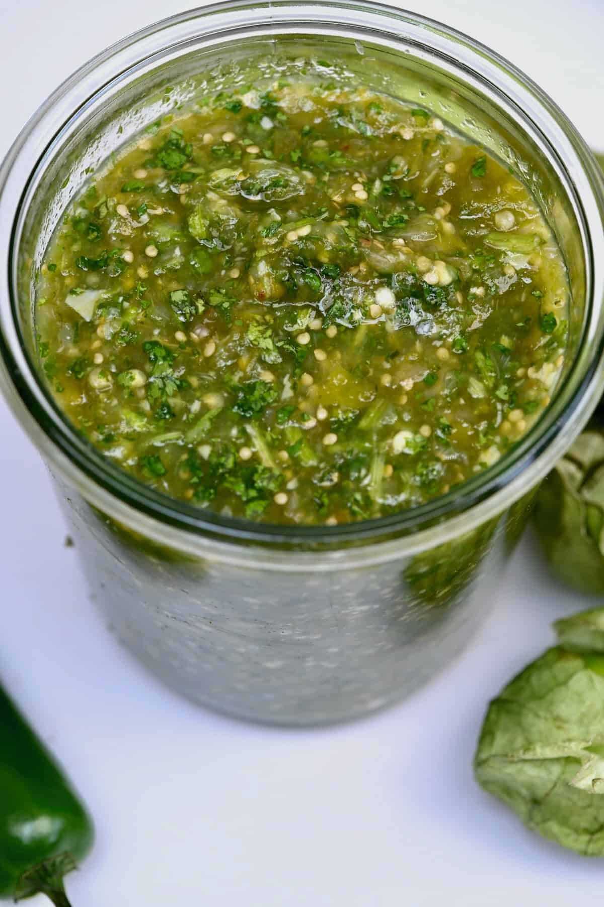

Salsa verde

Description
This is a simple authentic salsa verde recipe you can enjoy with chips or on your favorite tacos. Takes no more than 30 minutes and will definitely impress your guests.
Ingredients
- 10 Tomatillos
- 2 Thai chilis
- 1 tbsp Salt
- 2 cloves Garlic
- 1/2 an onion
- 1 cup water
Steps
- Peel and clean the tomatillos with water.
- Turn on the oven to 450F. Place tomatillos on a baking sheet and roast for 20 minutes (10 minutes each side).
- Place peeled garlic cloves, onion, thai chilis, tomatillos and water in a blender. Blend until desired consitency.
- Add salt to taste.